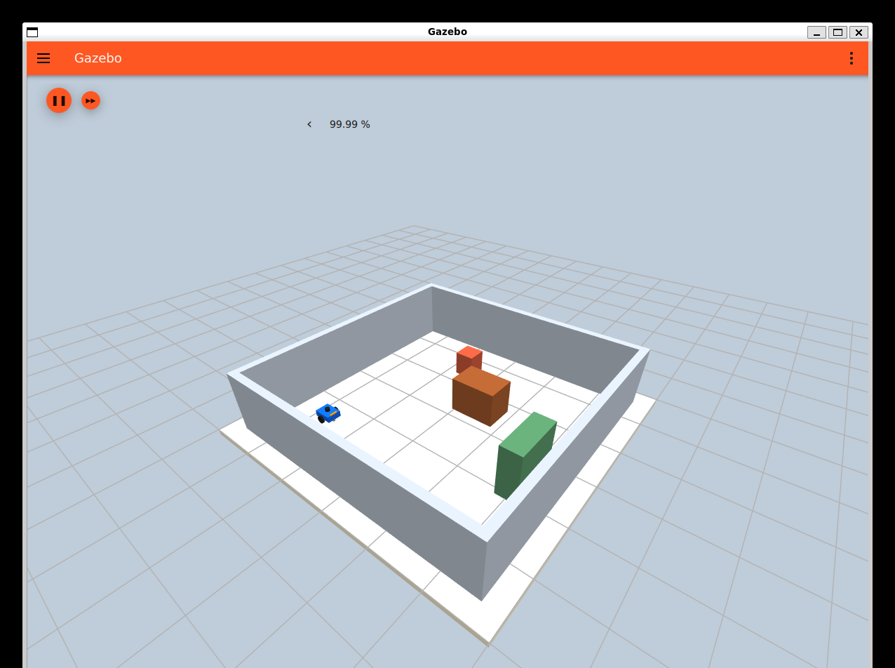
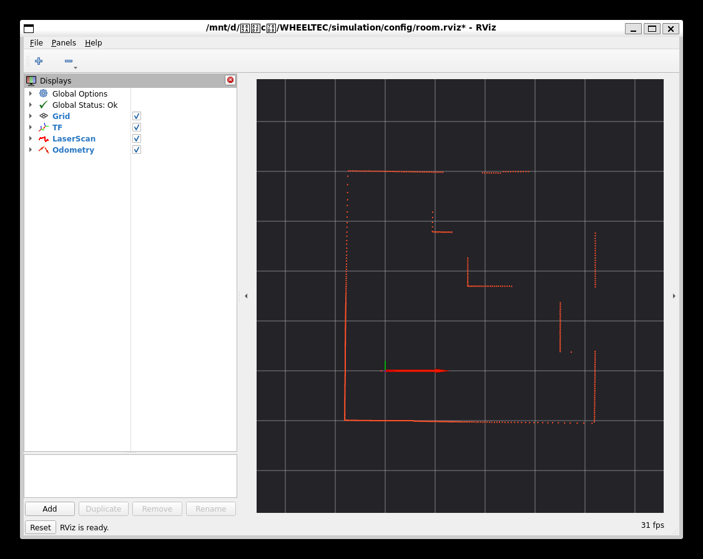

Gazebo：看虚拟现场

- 滚轮缩放；左键拖动平移；按住滚轮拖动旋转视角。
- 右击小车 →
Move to移过去看；Follow跟随小车。 - 左上橙色圆钮播放/暂停整个仿真。驾驶时保持运行；调整视角不会开动小车。
从 D:\虚拟c盘\WHEELTEC 双击入口文件。.cmd 用来启动，.md 是说明文档。
先关掉旧仿真，再打开一套新的；用启动它的黑色终端 Ctrl+C 结束。

Move to 移过去看；Follow 跟随小车。
Move Camera，再用滚轮缩放、中键拖动平移、左键拖动旋转俯视图。Nav2 Goal：下达目标位置；2D Pose Estimate：告诉定位算法小车大概在哪、朝向哪里。Displays 复选框可以显示或隐藏图层。还没下目标时没有路线。先选已经看到的白色空地，避开黑色障碍和未观察区域。
打开房间仿真.cmd。打开键盘遥控.cmd。点击遥控终端，把输入法切到英文。| 按键 | 动作 |
|---|---|
| i | 前进，0.15 m/s |
| , 英文逗号 | 后退，0.15 m/s |
| j / l | 原地左转 / 右转，0.5 rad/s |
| k / 空格 | 停止 |
| q / Ctrl+C | 停止并退出遥控 |
按住或连续点按才持续运动；0.35 秒没有新按键就自动停止。长按刚开始短暂停一下，是系统按键连发的延迟。按键要发给遥控终端，在 Gazebo 或 RViz 里按不会开车。
Nav2 Goal，在目标处按住左键，拖出短箭头后松开。Navigation 2 中的 Reset 会变成 Cancel；点 Cancel 取消任务。要接管驾驶，先取消，再开键盘遥控。临时封路时小车等待，每5秒重新尝试规划，最多约5分钟；障碍移除后原目标继续。需要提前停止时点 Cancel。
没有任务时面板显示 Reset / Pause，这时不用找 Cancel。普通驾驶和下目标不需要点 Reset 或 Pause；它们会清理或停用导航节点。
Navigation: active、Localization: inactive 是正常的：此时 SLAM 提供定位，面板的 Localization 指 AMCL。加载已存地图后才用 AMCL。保存当前地图.cmd。打开已存地图导航.cmd，加载最近一次保存的地图。2D Pose Estimate，在估计的小车位置按住左键，朝实际车头方向拖动再松开。本房间重启后在地图 (0, 0)，车头朝 +X，即默认画面的右侧。Nav2 Goal 指定目标。初始姿态是在告诉算法“小车大概在这里”，不会把 Gazebo 里的车瞬移过去。尚未指定时，可能看不到转换到地图上的雷达或位置箭头。
把下面路径复制到 Windows 资源管理器地址栏，可查看按时间保存的地图：
\\wsl.localhost\WHEELTEC-Ubuntu-22.04\home\wheeltec\wheeltec_sim_ws\data\maps
还没保存过地图时，先完成一次建图和保存，再用已存地图入口。
开始自主探索.cmd。探索时不要打开键盘遥控，也不要同时点击其他导航目标。探索模块会自己选目标。
completed 表示地图已保存并已返回；incomplete 表示还有未解决区域或触发任务限制；failed 表示保存、定位、返回等步骤失败。结束后场景继续显示，用启动终端 Ctrl+C 退出。
打开房间仿真.cmd。